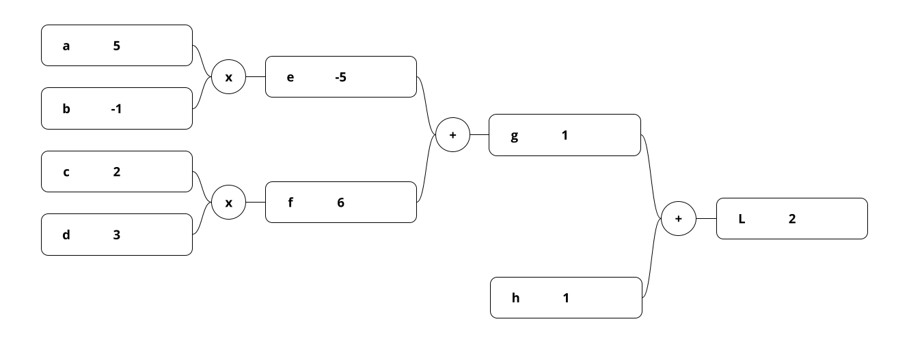
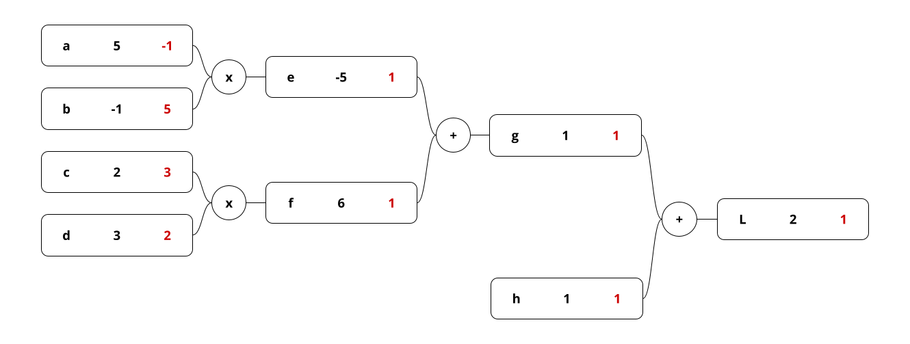
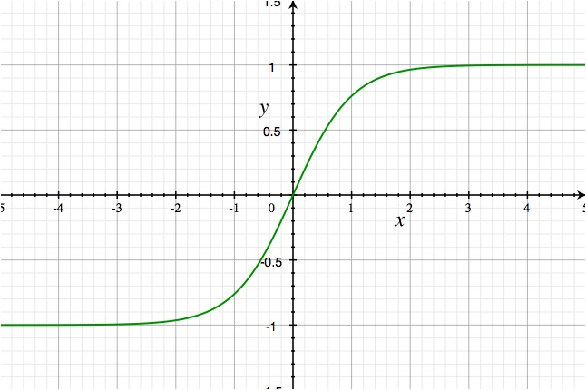
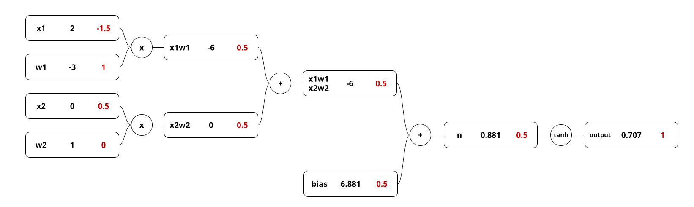
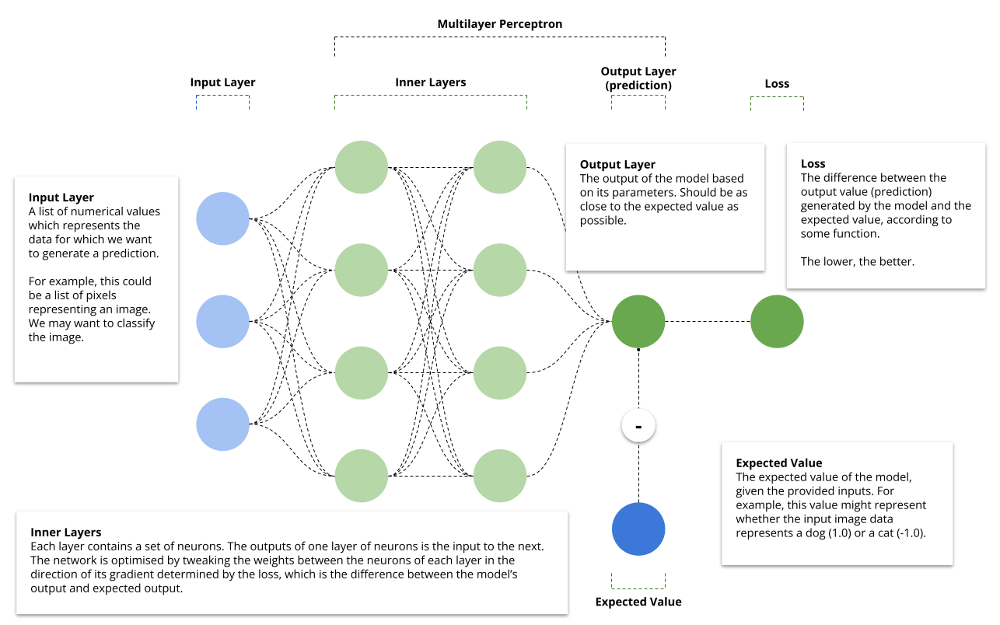

Nicholas James Hall
For a while I struggled with backpropagation. It's something I'd grasp and then subsequently forget.
Recently, however, I came across the videos of Andrej Karpathy which just made it incredibly simple. In particular, his series on micrograd does an incredible job of showing how backpropagation works by applying it to a chain of mathematical operations outside of a neural net. Essentially, he uses the most simplistic example possible, which is then simply scaled up for real neural nets.
First, we need to calculate the output of the chain of operations. This is simple. Let's take the example of 1 + (2 * 3) + (5 * -1). The answer is -2. Obviously it can be simplified to 1 + 6 + -5:
We can think of the various stages like a network or a chain, with each variable assigned a unique value. 
Next, we want to calculate the gradient of each of these nodes. What we're trying to figure out is how much leverage each of these variables has on the output of this equation. In other words, what is the derivative of L with respect to a given variable?
How do we calculate this? We can use the following formula to help: (f(x+h)-f(x))/h. What is this formula? It's used to calculate the difference quotient. In other words, it gives us the slope of a line which intersects two points on a graph (x and x+h, in this example) according to a given function.
How do we calculate the derivative of the output L with respect to g? The answer is simply 1. Why? Let's use the formula above.
Next, we need to take this number and multiply it by the gradient of L. In this case, this is 1, since L is the output. The answer is therefore 1. Likewise, the derivative of L with respect to h is also 1, since L is the result of the addition of this number.
But why do we multiply them to the gradient of L? This is the chain rule. We must do this all the way down the chain to calculate the gradients to the input nodes (a, b, c and d). Intuitively multiplication makes sense. As put by George F. Simmons: "if a car travels twice as fast as a bicycle and the bicycle is four times as fast as a walking man, then the car travels 2 x 4 = 8 times as fast as the man.”
If we add the gradients, starting from the output on the right and making our way to the left, we get this: 
Why is this useful?
One thing which is isn't mentioned above is the need for an activation function. This is applied to the value of the output node and therefore it's necessary, during backpropagation, to find its derivative. In a real neural network, this would be applied on the sum of the dot product of all of the inputs and the bias of a given node.
Karpathy uses the tanh activation function which is essentially the following: (math.exp(2*x) - 1)/(math.exp(2*x) + 1).
This function squeezes the output towards either 1 or 0. Non-linear activation functions are required to model non-linear
data in a way that isn't just the equivalent of a straight line on a graph.

How do we find the derivative? We do the following:
Now that we've demonstrated backpropagation in a simple chain of mathematical operations, how would this work in a real neural net? The answer is that, for a single neuron, it doesn't look too different.  This single neural has two inputs, each with its own output value (x[i]) and connection strength or weight (w[i]). We calculate the gradient the same. The only difference is that in a real neural network, we can only adjust the weights and the biases directly.
One interesting thing to notice that the gradient of w2 is zero. This is because no matter how you change the value of this weight, it will not affect the outcome, since it is multiplied by x2, which is zero. Notice how the activation function, tanh, is also included in this diagram.
In the next section, we will scale this up to multiple neurons and multiple layers, known as a multi layer perceptron.
The example above shows a simple neuron. But we have a few things missing:
First let's build a neural net. In the following diagram, we can see that the inner and output layers are referred to as a multilayer perceptron (MLP). This MLP takes three input nodes, and outputs a single node which contains the output value of the neural net. This value, the prediction based on the current parameters (the weights and biases of the nodes in the network), will then be evaluated against the expected value. 
For example, the input could be a list of integers which represent pixels (obviously the input would be much larger in such a case). The expected output might be 0 or 1, determining whether the image represents a dog or a cat. Our goal is to tweak the parameters such that the loss (the difference between the prediction of the model and the expected value) is as low as possible.
First, we can create a Neuron class in Python. The weights will be set randomly to begin with. One weight will be defined for each input. The neuron will have one bias.
class Neuron:
def __init__(self, nin): # nin = number of inputs
# set of weights, once for each input
self.w = [Value(random.uniform(-1,1)) for _ in range(nin)]
# one bias for the neuron
self.b = Value(random.uniform(-1,1))
# allows you to call an instance of the class like a function
# e.g. n = Neuron(2); n([2.0, 3.0]).
def __call__(self, x):
# w * x + b
# Merges or "zips" two lists together.
# Example:
# List 1: [2.0, 3.0] (the weights)
# List 2: [0.00003, 0.124141] (the values)
# result: [(2.0, 0.00003), (3.0, 0.124141)]
#
# sum() works here because instances of Value
# can be added together.
act = sum((wi*xi for wi, xi in zip(self.w, x)), self.b)
# Then we flatten the output through the non-linear
# activation function.
return act.tanh()
# Returns all the parameters (weights) and the bias as a list.
# We will need this later when we want to update these parameters.
def parameters(self):
return self.w + [self.b]
Next, we can define the layer class, which will contain the neurons.
class Layer:
def __init__(self, nin, nout):
# Creates a layer of neurons, determined by the number
# of outputs required, each with the same number of inputs.
self.neurons = [Neuron(nin) for _ in range(nout)]
def __call__(self, x):
# Ex: if nin = 3, x = [2.0, 5.4, 3.4]... one for the
# output of each input neuron.
# Each neuron is called with the previous layer's output
# values, which are the input values to these neurons.
outs = [n(x) for n in self.neurons]
return outs[0] if len(outs) == 1 else outs
def parameters(self):
# Returns all parameters for all of the neurons within the layer.
# Will be needed when we want to update the parameters later on.
return [p for neuron in self.neurons for p in neuron.parameters()]
# List comprehension for the following:
# params = []
# for neuron in self.neurons:
# params.extend(neuron.parameters())
# return params
Lastly, we need an MLP class.
class MLP:
def __init__(self, nin, nouts):
# nin = the number of inputs, or input layer size. Example: 3
# nouts = a list of the expected MLP layer sizes. Example: [4, 4, 1]
# A list of layer sizes: e.g. [e, 4, 4, 1]]
sz = [nin] + nouts
# Based on the input and output sizes, it would create the following layers:
# Layer(2, 4), Layer(4, 4), Layer(4, 1)
self.layers = [Layer(sz[i], sz[i+1]) for i in range(len(nouts))]
def __call__(self, x):
# Calls each layer one by one with the output of the previous
# layer and finally returns the output of the final layer (the predictions).
for layer in self.layers:
x = layer(x)
return x
def parameters(self):
# Returns all parameters in the MLP.
# Necessary when updating the parameters to reduce the loss of the network later.
return [p for layer in self.layers for p in layer.parameters()]
Once we have this, we can create the network quite simply and generate predictions.
mlp = MLP(
3, # The model will expect three inputs
# The size of each layer.
# In this case, 3 layers with 4, 4, and 1 output
# values respectively.
[4, 4, 1]
)
targets = [1.0, -1.0, -1.0, 1.0] # what we expect for each list of inputs
# The list of inputs
inputs = [
[2.0, 3.0, -1.0], # Should be 1.0
[3.0, -1.0, 0.5], # Should be -1.0
[0.5, 1.0, 1.0], # Should be -1.0
[1.0, 1.0, -1.0] # Should be 1.0
]
# This will return a list of predictions.
# The closer to the target, the better.
# Example: [0.999777, -0.54444, -0.9484848, 0.343432]
predictions = [mlp(x) for x in inputs]
Next, we need to calculate the loss based on the targets.
# Mean squared error loss
# Calculates loss function for each target / prediction pair.
# Zips targets and predictions, subtracts the target from each prediction, then squares the result.
# Example:
# Targets = [1.0, -1.0, -1.0, 1.0]
# Predictions = [0.999777, -0.54444, -0.9484848, 0.343432]
# Target, Prediction = [[1.0, 0.999777], [-1.0, -0.54444], ...]
# Losses = [0.000000049729, 0.2075]
losses = [(prediction - target)**2 for target, prediction in zip(targets, predictions)]
loss = sum(losses)
Once we have this, we can begin training the model:
# 100 is arbitrary. Essentially, the loss will be generated and parameters tweaked 100 times.
# In real life would probably run until a limit is reached OR
for k in range(100):
# FORWARD PASS
# Predictions generated from inputs.
# Essentially we run the model n number of times, where n is the length of inputs.
predictions = [mlp(x) for x in inputs]
# Losses determined by comparing predictions to expected values.
losses = [(prediction - target)**2 for target, prediction in zip(targets, predictions)]
# Saved as a single Value instance so we can run a backward pass to calculate
# the gradients of all values in the network.
loss = sum(losses)
# BACKWARD PASS
# IMPORTANT: ZERO GRAD - we need to reset to zero each time.
# Otherwise the gradients remain which are based
# on the previous backward pass, which are themselves
# based on the loss the previous predictions.
for p in mlp.parameters():
p.grad = 0.0
# Sets the gradient of every Value node in the network based on the loss.
# Essentially, how big a role did each Value play in affecting this outcome?
loss.backward()
# Now, we have to nudge the gradient of each parameter (weights and biases) in the direction
# of its gradient.
for p in mlp.parameters():
# If we did not make this negative, tweaking the parameter in the direction of its gradient
# would make the final output higher. However, in this case, the final output is the loss.
# We want to make the loss as small as possible.
#
# 0.1 is completely arbitrary.
p.data += -0.1 * p.grad
print(k, loss.data)
And that's pretty much it. The model improves with each iteration. Obviously, this is simple. No batching. Slow activation function. Constant learning rate.